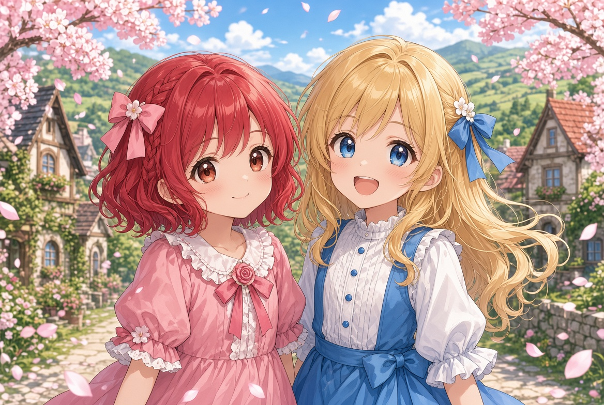

ニュース お知らせ

2027.01.31
カクヨムweb小説版 完結予定
カクヨムweb小説版は、2027年1月31日をもって完結予定です。
2026.12.01
カクヨムコン12 参加予定
カクヨムコン12への参加を予定しています。応援よろしくお願いいたします。
カクヨム、なろうは1日1話更新、19:08公開となります。
総ルビ版も1日1話更新、21:03公開となります。
2026.11.20
カクヨムweb小説版 連載開始予定
カクヨムにてweb小説版の連載を開始予定です。
カクヨム、なろうは1日2話更新、11月中の期間はそれぞれ7:08、19:08公開となります。
総ルビ版も1日2話更新、11月中の期間はそれぞれ12:03、21:03公開となります。
----.--.--
以上、予定です。
以下、サイトの履歴となります。
2026.11.4
2026.11.1
2026.10.31
ギャラリーを更新
ギャラリーに画像を4枚追加しました。
「幼馴染」「教会出張所」「エールとラーミア」「マハムと手紙」。
2026.10.31
ポータルサイト ルビ対応 v2.1
ポータルサイト全体で、ルビにビッグ(BIG)、インライン(IN)の各モードを追加し、ルビの間違いをいくつか修正しました。
2026.10.25
ポータルサイト ルビ対応
ポータルサイト全体を、総ルビ仕様に対応いたしました。また総ルビ版の同時掲載の告知も追記しています。
2026.10.17
ポータルサイト開設
[カーマイン村]異世界スキル【スローライフ】の公式ポータルサイトを公開しました。キャラクター紹介や各話紹介をご覧いただけます。